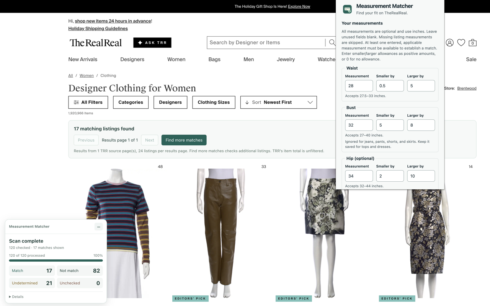

Text analysis · Research methods
{{project-sentiment-analysis}}
FROM RESPONSES TO THEMES
“What matters to me…”
“In my experience…”
“I would like to see…”
Language
Patterns
Insight
Listening closely. Looking for structure.
{{name}}
{{about}}Published research
and work in progress.
Research questions.
Practical explorations.
